узнай, откуда к нам приходят модные тренды, какую одежду, обувь и аксессуары носили модники 90-х

 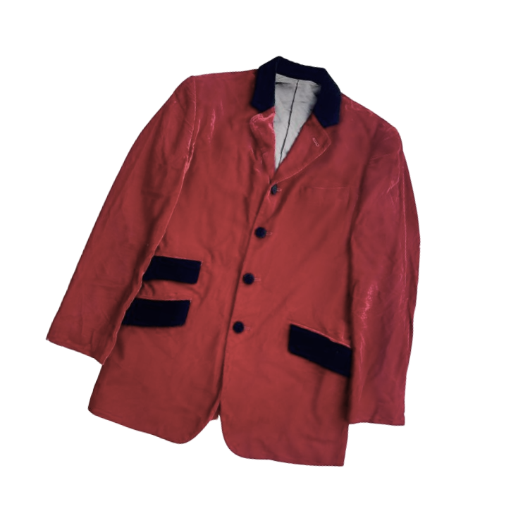
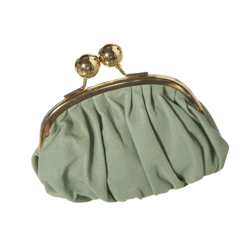
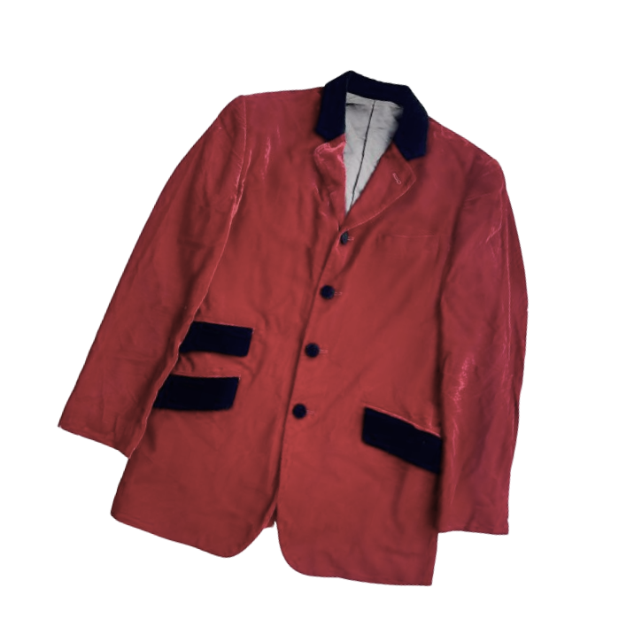
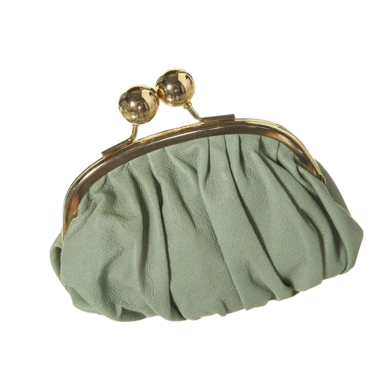
 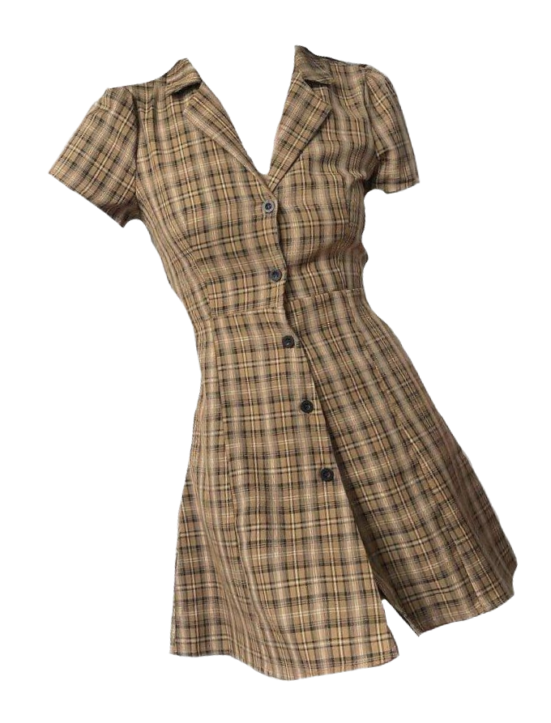
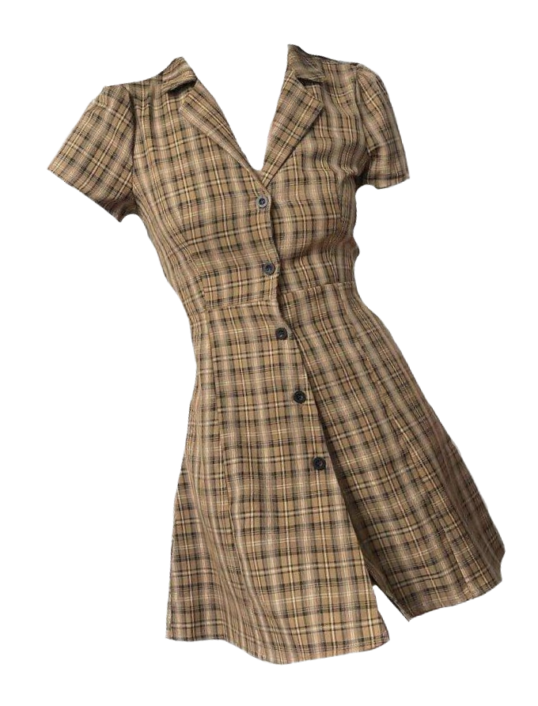


Мода 90-х годов стала ярким отражением стремления молодежи к свободе и самовыражению
Именно молодежь стала движущей силой революционной эпохи в появлении модного течения, нещадно ломавшего все гендерные стереотипы и создававшего новые тренды. Появление множества новых стилей позволяло каждому максимально ярко подчеркнуть свою индивидуальность за счет одежды оригинальных фасонов и невероятного сочетания цветовых оттенков, используемых в одежде.
Культ занятий спортом и подтянутого тела был с восторгом воспринят молодым поколением, которое активно продвигало данный тренд, влияя на мнение дизайнеров ведущих брендов. Одежда в стиле 90х — это не только экстравагантные фасоны в умопомрачительной цветовой палитре, но и прически с пышными начесами и оригинального дизайна аксессуары.


стильная молодежь 90-х
Мода 90-х годов стала ярким отражением стремления молодежи к свободе и самовыражению

стильная молодежь 90-х


Косуха

Рубашка без рукавов
Джинсы
Кроссовки

Жакет

Футболка

Кожаный плащ
Рубашка

Мини-юбка

Грубые ботинки
В целом, 90е — это джинсы. Точнее сказать — одежда из джинсы. Из этого материала шили буквально всё: юбки, комбинезоны, куртки, сумки и даже обувь. Самый популярный лук — это джинсы-варенки и джинсовая куртка, которые носили вместе, и эти вещи были практически у каждого. Унисекс был в почете, вместе с джинсами девушки и молодые люди носили футболки, объемные свитера и кроссовки.
Еще один популярный лук — это мини юбка (джинсовая или кожаная), блузка или свитер с большими плечами, колготки в сетку или цветные лосины с высоким каблуком. Вообще, цветные лосины занимали отдельное почетное место в гардеробе модниц 90х. Их носили как с юбкой или шортами, так и отдельно с удлиненным свитером и поясом или футболкой, приоткрывавшей одно плечо.
Косуха

Джинсы
Жакет
Грубые ботинки
Кожаный плащ

Мини-юбка

Рубашка без
рукавов

Кроссовки
Футболка

Рубашка
В целом, 90е — это джинсы. Точнее сказать — одежда из джинсы. Из этого материала шили буквально всё: юбки, комбинезоны, куртки, сумки и даже обувь. Самый популярный лук — это джинсы-варенки и джинсовая куртка, которые носили вместе, и эти вещи были практически у каждого. Унисекс был в почете, вместе с джинсами девушки и молодые люди носили футболки, объемные свитера и кроссовки.
Еще один популярный лук — это мини юбка (джинсовая или кожаная), блузка или свитер с большими плечами, колготки в сетку или цветные лосины с высоким каблуком. Вообще, цветные лосины занимали отдельное почетное место в гардеробе модниц 90х. Их носили как с юбкой или шортами, так и отдельно с удлиненным свитером и поясом или футболкой, приоткрывавшей одно плечо.
Заколки-бабочки, кольцо «настроения», подвеска с символом инь-ян и многое другое — самые модные вещи 90-х, о которых мечтали все!

В отношении украшений и аксессуаров предпочтение отдавалось крупным изделиям. Популярны были замшевые, кожаные сумки, а также сшитые из джинсовой и льняной ткани. Женская мода 90х приветствовала использование ремней самого невероятного дизайна и ширины. Ремешки в виде цепочки или широкие кожаные ремни с крупной пряжкой имела в своем гардеробе практически каждая девушка. Аксессуары были естественным довершением модного образа и использовались повсеместно, использовались, чтобы подчеркнуть стиль, достаток и уникальный вкус.


 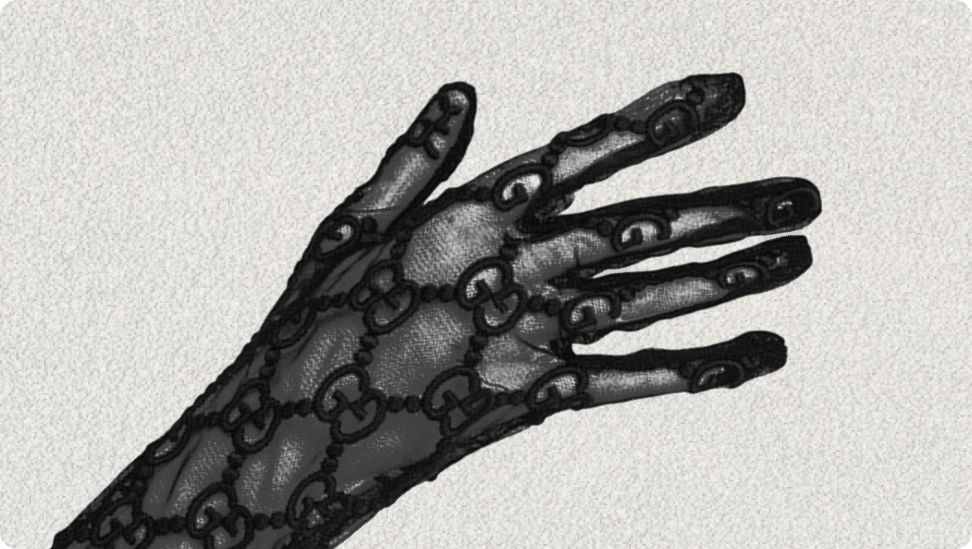
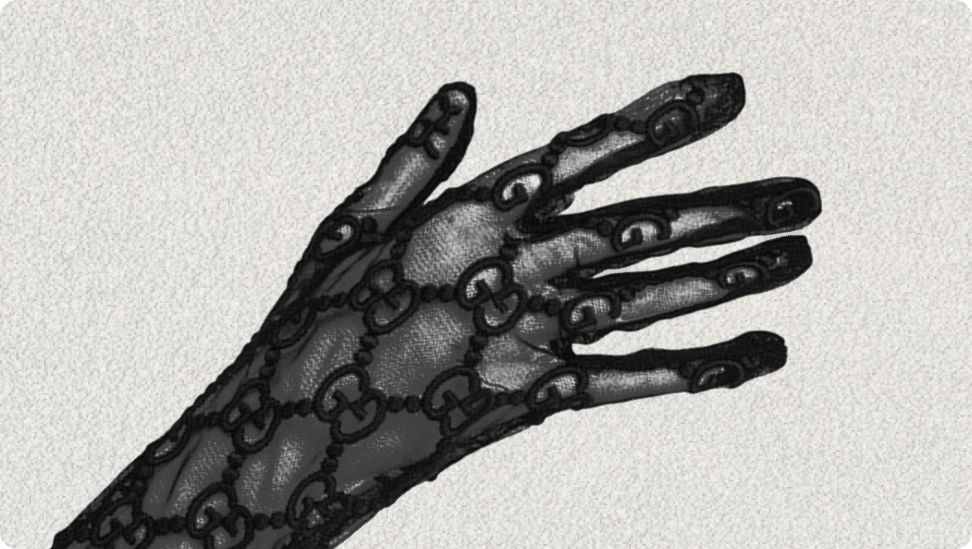

Заколки-бабочки, кольцо «настроения», подвеска с символом инь-ян и многое другое — самые модные вещи 90-х, о которых мечтали все!
В отношении украшений и аксессуаров предпочтение отдавалось
крупным изделиям. Популярны были замшевые, кожаные сумки, а также
сшитые из джинсовой и льняной ткани. Женская мода 90х
приветствовала использование ремней самого невероятного дизайна
и ширины. Ремешки в виде цепочки или широкие кожаные ремни
с крупной пряжкой имела в своем гардеробе практически каждая
девушка. Аксессуары были естественным довершением модного образа
и использовались повсеместно, использовались, чтобы подчеркнуть
стиль, достаток
и уникальный вкус.
 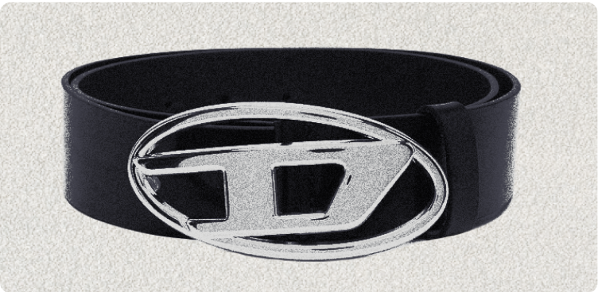
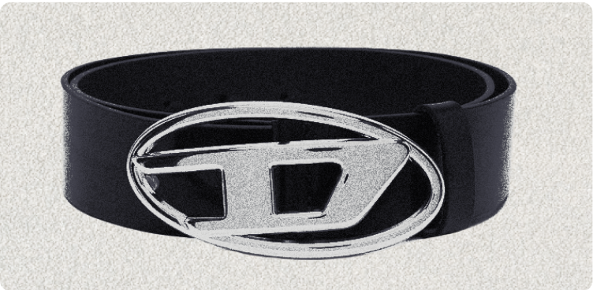
 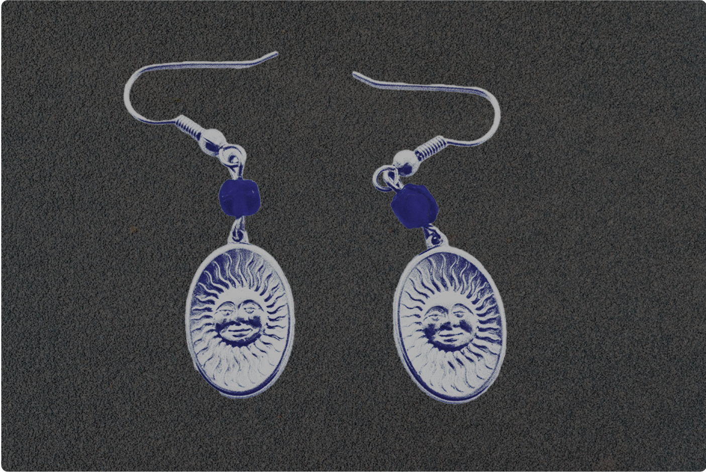
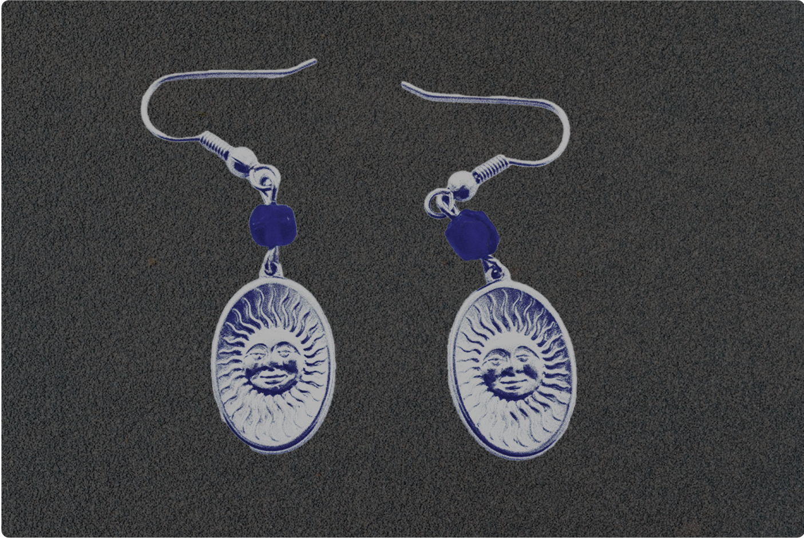


Заколки-бабочки, кольцо «настроения», подвеска с символом инь-ян и многое другое — самые модные вещи 90-х, о которых мечтали все!
В отношении украшений и аксессуаров предпочтение отдавалось крупным изделиям. Популярны были замшевые, кожаные сумки, а также сшитые из джинсовой и льняной ткани. Женская мода 90х приветствовала использование ремней самого невероятного дизайна и ширины. Ремешки в виде цепочки или широкие кожаные ремни с крупной пряжкой имела в своем гардеробе практически каждая девушка. Аксессуары были естественным довершением модного образа и использовались повсеместно, использовались, чтобы подчеркнуть стиль, достаток и уникальный вкус.
 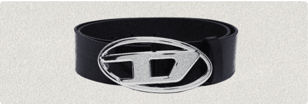
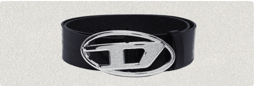
 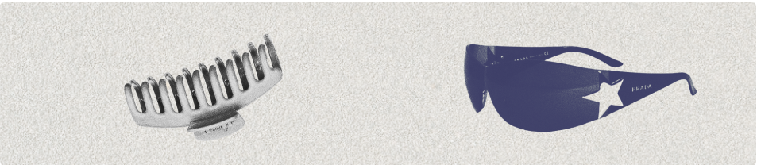
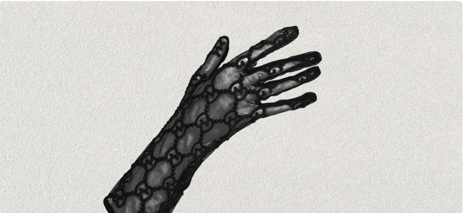
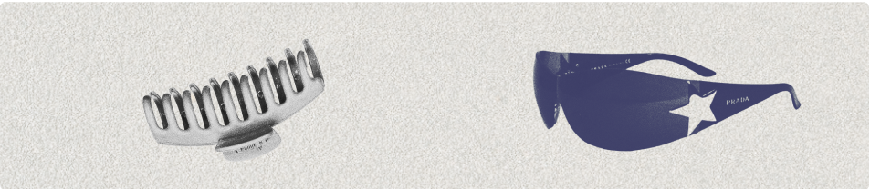
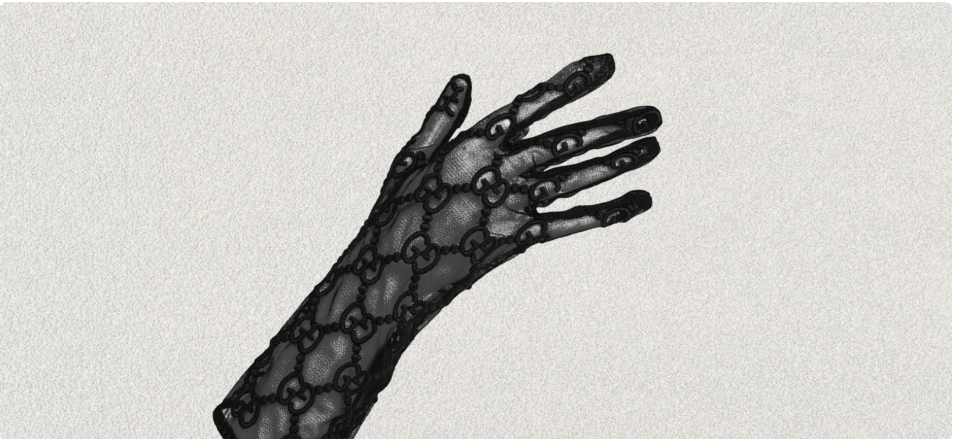
мужская прическа в 90-е
Мода 90-х годов диктовала суровые условия: чем ярче и необычнее была укладка, тем современнее и утонченнее считалась девушка. При этом моду женщинам старшего поколения обычно диктовали актрисы из зарубежных сериалов, а точнее, их экранные героини. Молодежь же действовала по принципу: чем ярче и необычнее — тем лучше.
Мода 90-х годов была уникальной и неповторимой. Её отличительными чертами были-большой объем, радикальные эксперименты с цветом и конечно обилие лака на волосах. Лакировали причёски щедро, даже была такая реклама, когда залакированной причёске не был страшен ни дождь, ни ветер. Если же специального средства для укладки не было под рукой, то в домашних условиях изготавливали сильно концентрированный сахарный сироп и уже им сбрызгивали волосы. Чем ярче и необычнее была укладка, тем современнее и утонченнее считалась девушка.

прическа с аксессуарами

женская прическа в 90-е
трендовая мужская прическа
мужская прическа в 90-е

прическа с аксессуарами

женская прическа в 90-е

трендовая мужская прическа


В 90-е годы девушки в России только получили возможность покупать зарубежную косметику. Это было время крайностей и экспериментов — не всегда удачных, но точно привлекающих внимание окружающих.
тренды причесок в 90-е

Необычный тренд тех лет — контраст оттенка карандаша для губ и цвета помады. Карандаш должен был быть чуть темнее. Самые модные брали карандаш оттенком темнее почти на несколько тонов, чем помада. И границу оставляли четкой, не растушевывая. На веках — яркие тени, матовые или с эффектом сияния. При этом их дополняли черной подводкой.
Если сейчас особой популярностью пользуются широкие брови с графичным изломом, то в 90-х девушки предпочитали круглую дугообразную форму. Не забывали в те времена и про румяна. Предпочтение, как правило, отдавали розовым, а не персиковым оттенкам. Чем больше туши для ресниц, тем лучше. Одним слоем тогда не обходились, иначе кто узнает, что тебе перепала тушь для ресниц?